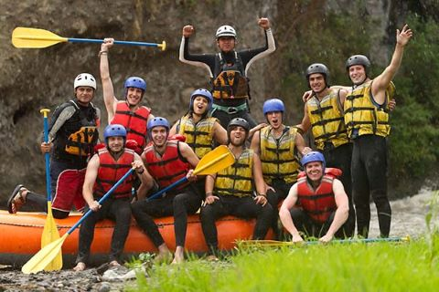
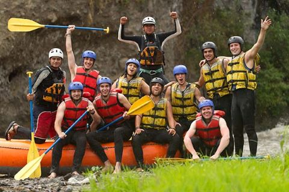

About us

The White Water Rafting Company is a Modern Rafting Company with it's purpose to ensure people all over the world people are connected through the Rafting Game.
Our Mission is to enable the youths to be better involved in rafting games. We also ensure a beter safety equipments and relevant materials are made readily available for recreational, research and educational purposes.
History
The White Water Company was born in 1952 by Lansana Jusu. Lansana Jusu was a sailor, psychologist, Businessman and a software Engineer. Lansana Jusu grown up in a riverline community with just about 2000 residents along a 70km strectch coastal plain. Education was not seen feasible because there were no school available in the entire community. His father was a fisherman and his mother a farmer. Lansana usually went out with his dad in his dad's fishing trip and on weekends to his mother's farmland to work. On one fatal day with his father on a fishing trip, they accident lost their way home after a day work. The sea was rough scary, the atmosphere was dark and worrisome in cause their boat to be sail to a near by island far away from home. During there stay on the island, Jusu enjoy the beauty of nature so much that he desire that he must explore it. After 2 weeks on the island, they finally got a rescue from a ship that came near. Whilst on the ship getting home, he inquire of the sailor that he should help him explore the nature of the sea which the sailor Michael Degot Lawson accepted. Lansana later spoke to his dad about his quest but his dad was not well pleased with the idea but after the sailor spoke to him to let his son do his exploration he didn't decline. Lansana left his home and travelled with Michael to a far away land staying along the beach area, in freetown. There he was train as a sailor and a diver. He grown so much love for rafting especially along the atlantic coast of freetown that he decided to form a rafting club. In 1980 he traveled to the United States after winning a state lottery DV. In the United States, he earn a Bachelor's degree in Software develpment and a Maters degree in Computer science. In 1988 he open a Playstation business and Physiotheraphy unit in Las vesgas. In 1990 he traveled to Miami where he established the famous Miami beach in 1992. After years of working, he established the White Water Rafting Company on September 27, 1998. He established this company in the bid to enable worldwide connectivity and providing for safety for lovers of rafting all over the world.
Adventure Awaits You!
 
